In this example, we create a simple Correspondence model for Email correspondence.
The correspondence uses process data and user data, which will be replaced directly in the
message editor. The complete example model CorrespondenceExample can be
found in the example ZIP file in folder correspondence:
all-tutorials.zip.
In this section we have a look at the CorrespondenceExample. It contains the primitive data CustomerId, UserEmail and Fax. The correspondence process startCorrespondence consists of the following elements:
The process supports process attachments and contains in-data paths for all three primitive data.
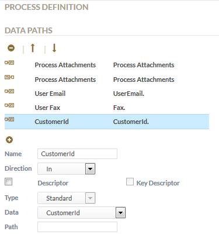
Figure: Correspondence Process Data Paths
The process diagram looks as in the following screenshot:
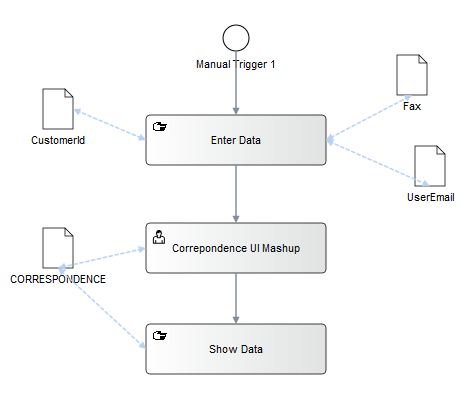
Figure: Correspondence Process
To create our correspondence, deploy the example model and perform the steps described in this section.
In the Participant Manager view create a user with user details providing a description and validity dates.
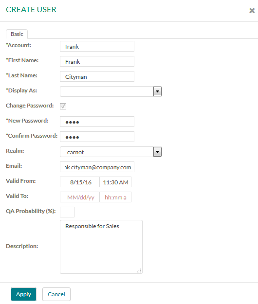
Figure: Create a User with Details
Assign this user to the Administrator role.
^\(?[0-9]{3})\)?[-. ]?([0-9]{3})[-. ]?([0-9]{4})$.
For example: 111 222 4711.
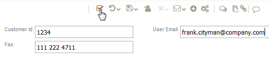
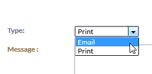
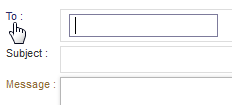
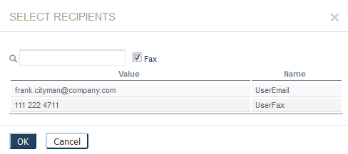
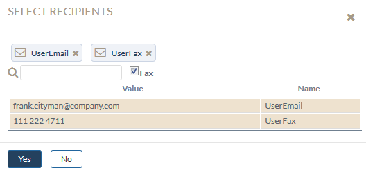
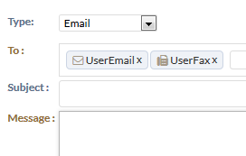
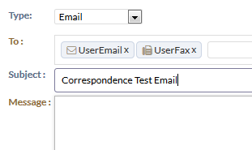
In the message content area, click the Source button.
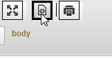
Figure: Click the Source Button
Enter the following text for the correspondence in the content editor:
<p>Dear $user.firstName $user.lastName,</p> <p>Your account <b>$user.account</b> has been created with Customer Id <b>$CustomerId</b>.<br> It is valid from $user.validFrom until $user.validTo.</p> <p>Your work description is the following: "$user.description"</p> <p>You have the following grants: <b>$user.allGrants</b></p> <p>Welcome on board!!!</p> <p>Sincerely, Team ABC</p>
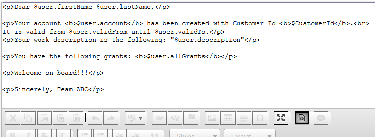
Figure: Adding email content
In this content we use user attributes as well as process data. These will be substituted with their values once we click the Source button again.
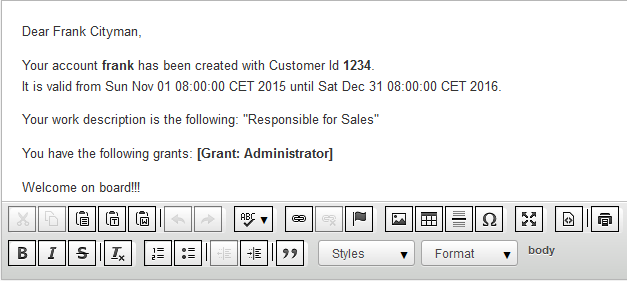
Figure: Adding email content
Complete the UI Mashup activity. The Show Data activity displays correspondence meta data.
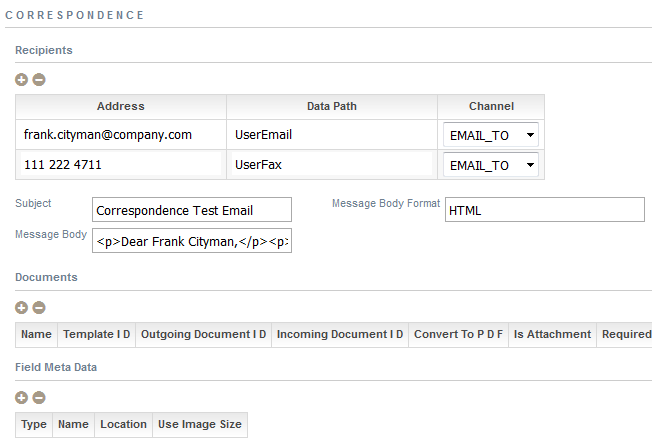
Figure: Displayed Correspondence data
In the Document Repository view or the Process Documents
section in the process history view of the startCorrespondence process,
expand the correspondence folder.
You see the created correspondence, named as correspondence-out-x.
To view the correspondence in read-only mode, click the created correspondence node
correspondence-out-x.
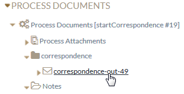
Figure: Click Correspondence
The correspondence opens in a read-only viewer. You see the placeholders substituted with our entered workflow data and user details.
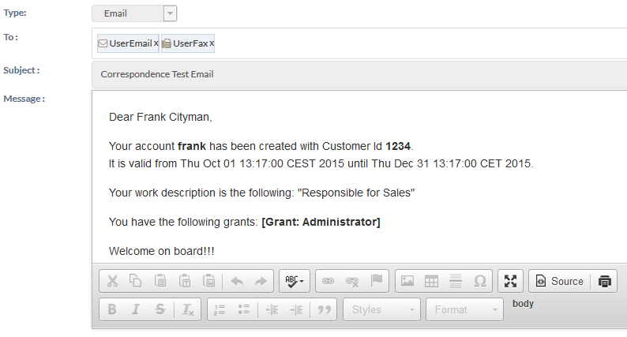
Figure: Viewing the Correspondence in read-only mode